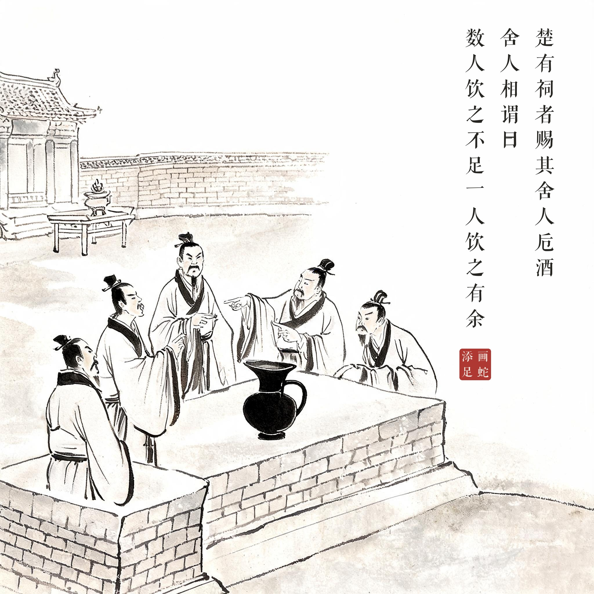
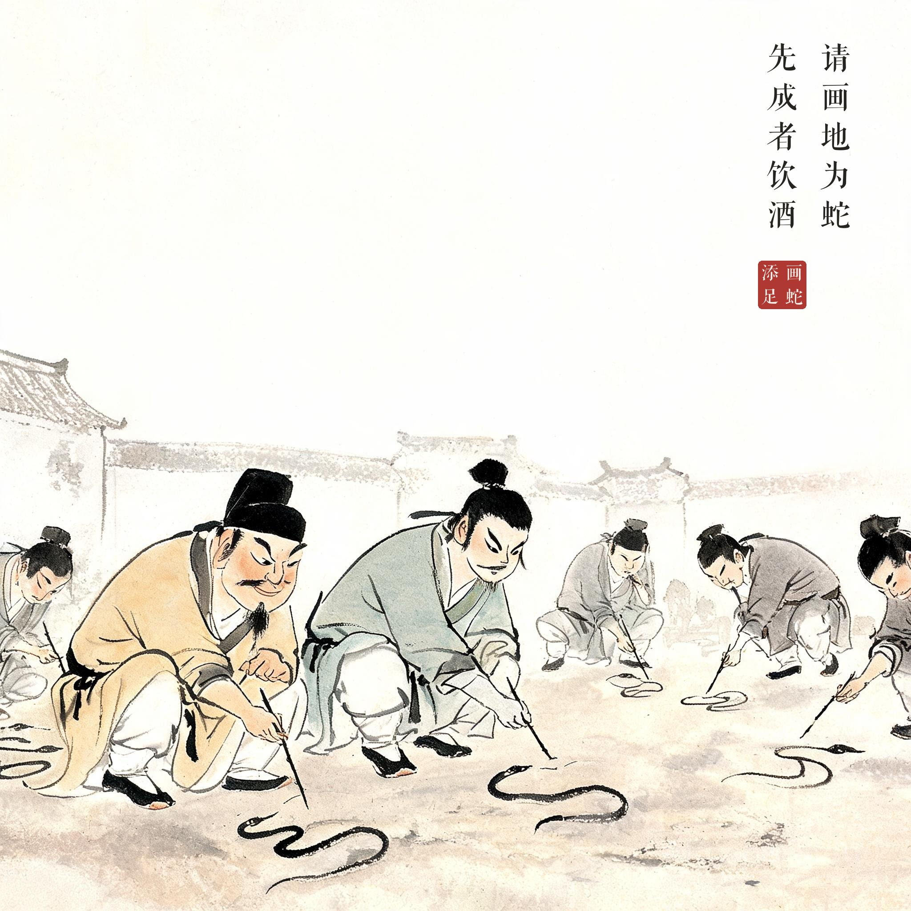
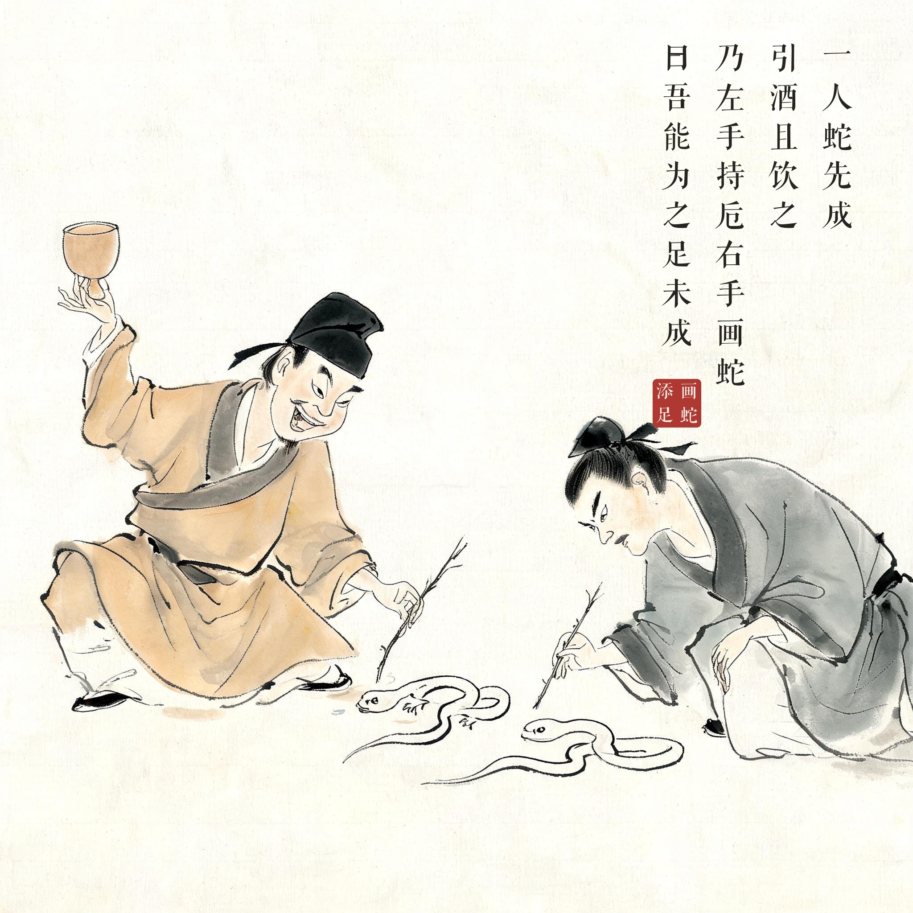
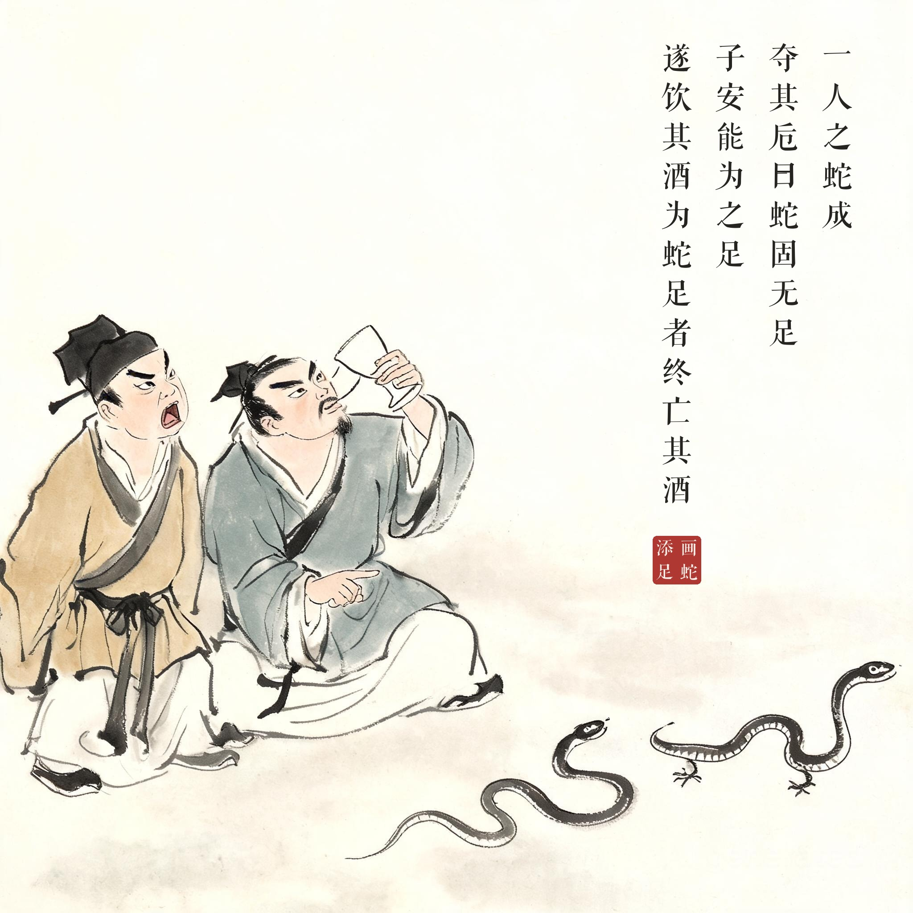

《战国策 · 齐策二》
楚有祠者，赐其舍人卮酒。舍人相谓曰：数人饮之不足，一人饮之有余。请画地为蛇，先成者饮酒。一人蛇先成，引酒且饮之，乃左手持卮，右手画蛇，曰：吾能为之足。未成，一人之蛇成，夺其卮曰：蛇固无足，子安能为之足。遂饮其酒。为蛇足者，终亡其酒。
楚国有人祭祀祖先后，把一壶祭酒赏给门客们喝。门客们商量：几个人喝不够，一个人喝又有余，不如各自在地上画条蛇，谁先画成谁喝。一人先画成了，端起酒杯正要喝，却左手端着酒杯、右手继续画，说："我还能给蛇添上脚！"脚还没画完，另一人的蛇画成了，一把夺过他的酒杯说："蛇本来就没有脚，你怎么能替它添脚呢？"说完把酒喝了。那个给蛇画脚的人，最终失去了他的酒。
做了多余的事反而坏了事；节外生枝、卖弄巧智，往往得不偿失。